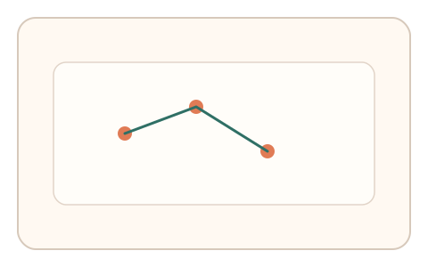
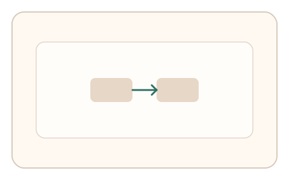
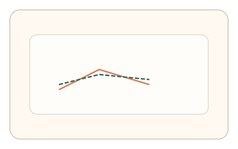

#141
F：意图/现实耦合 × 异步/随机插入（路径/预测误差）
已扩展
操作因果回溯
任务后异步要求复原两步操作顺序或关键路径，比较复原与真实轨迹的一致性。
概念原文
完成任务后异步要求复原两步操作顺序或关键路径，系统比较复原路径与历史基线。
以“意图因果记忆”作为验证信号。
研究背景
真实用户会保留短时操作因果关系与顺序记忆，回溯存在典型延迟与误差分布。脚本虽可完美复原，但其反应时与停顿模式不同。
核心机制
- 用户完成主任务后延迟触发回溯问题。
- 要求复原两步顺序或关键路径。
- 记录回忆准确率与反应时。
- 与历史基线或群体分布比对。
用户流程
- 步骤 1：用户完成主任务流程。
- 步骤 2：系统提示回溯两步操作。
- 步骤 3：系统记录准确率与反应时。
判定信号
顺序回忆准确率
真实回忆存在有限但稳定的准确率。
回忆反应时
回溯需要检索而非瞬时输出。
判定逻辑
准确率与反应时需在合理区间；完美且零迟疑或随机猜测判异常。
对抗面
- 脚本记录操作日志并完美作答
- 重放历史回忆序列
防御与缓解
- 随机化回溯时机与问题形式
- 加入干扰选项与时间间隔
- 多轮回溯取一致性
可达性与风险
提供清晰提示与更长答题时间，支持键盘操作。
- 记忆负担导致误拒
- 复杂流程可能引发困惑
可视化状态

状态 1：操作路径
记录用户完成的操作路径。

状态 2：回溯选择
选择两步操作的正确顺序。

状态 3：一致性判定
对比回溯结果与历史路径。
参考资料
Episodic memory
说明回溯与情景记忆特性。
Working memory
说明短时顺序保持能力。